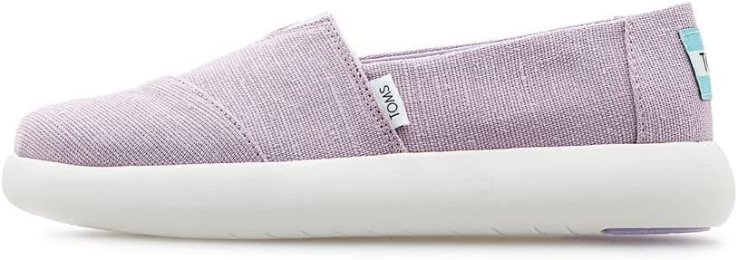

TOMS Alpargata Mallow Womens Boat Shoe

- Slip on style for an easy on and off with top elastic panel
- Fabric linings
- Heritage Canvas upper made primarily with jute which is an eco-fiber that requires less water and fewer chemicals
- Sole Material: Synthetic
- Heel Type: No Heel
- Closure: Pull On
Price
199 AED